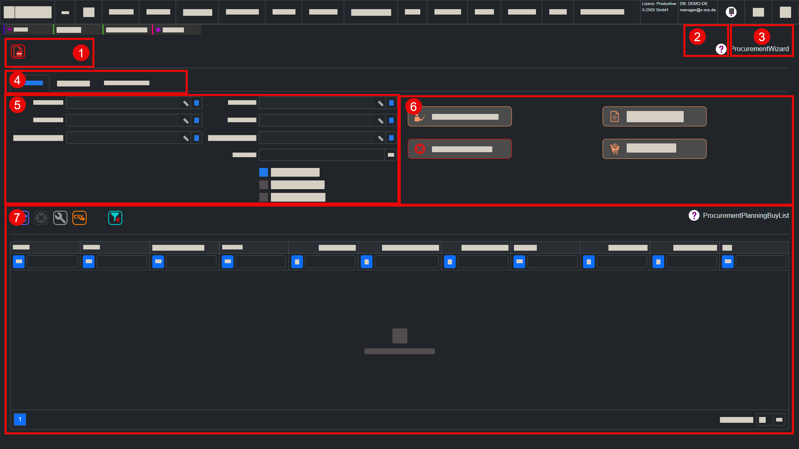

Assistent
Einordnung
X-ERP Hilfe > Grundlagen > Assistent
Ein Assistent führt den Anwender schrittweise durch eine fachliche Aktion in X-ERP. Anders als in einer EditView werden die Eingaben nicht einfach als einzelner Datensatz gespeichert, sondern dienen dazu, eine Aktion vorzubereiten, zu prüfen und anschließend auszuführen. Assistenten werden zum Beispiel verwendet, wenn mehrere Eingaben, Filter oder Berechnungsschritte zusammengehören.

1) Toolbutton zum Verlassen des Assistenten
Der Toolbutton zum Verlassen des Assistenten beendet die aktuelle Assistentenansicht und führt zur vorherigen Arbeitsumgebung zurück. Nicht abgeschlossene Eingaben oder noch nicht ausgeführte Aktionen sollten vorher geprüft werden, damit keine vorbereiteten Arbeitsschritte verloren gehen.
2) Online-Hilfe zum aktuellen Assistenten
Die Online-Hilfe öffnet die passende Hilfeseite zum aktuell geöffneten Assistenten. Sie erklärt den Zweck des Assistenten, die Bedeutung der Eingaben, die Register, Filter und Aktions-Buttons sowie das erwartete Ergebnis.
3) Name des aktuellen Assistenten
Der Name des aktuellen Assistenten zeigt, welche geführte Aktion gerade geöffnet ist. Das ist wichtig, weil Assistenten häufig konkrete Prozesse ausführen, etwa Berechnungen, Übernahmen, Erzeugungen oder Sammelaktionen.
4) Register-Tabs
Register-Tabs gliedern einen Assistenten in fachliche Schritte oder Themenbereiche. Sie helfen, Eingaben, Einstellungen, Prüfschritte und Ergebnisse übersichtlich voneinander zu trennen. Je nach Assistent können einzelne Register sichtbar, vorausgefüllt oder erst nach bestimmten Eingaben relevant sein.
5) Filter-Bereich
Der Filter-Bereich grenzt ein, welche Daten der Assistent verarbeiten soll. Hier werden zum Beispiel Zeiträume, Statuswerte, Partner, Artikel, Lagerorte oder andere Auswahlkriterien festgelegt. Ein sauber gesetzter Filter verhindert, dass zu viele oder falsche Datensätze in die Aktion einbezogen werden.
6) Aktions-Buttons
Aktions-Buttons starten die eigentliche Verarbeitung oder führen Zwischenschritte aus. Sie können zum Beispiel Daten suchen, Vorschauen berechnen, Ergebnisse übernehmen, Vorgänge erzeugen oder eine Aktion abschließen. Welche Buttons sichtbar sind, hängt vom jeweiligen Assistenten und vom aktuellen Bearbeitungsstand ab.
7) Ergebnisbereich
Der Ergebnisbereich zeigt, welche Daten durch Filter und Einstellungen gefunden, berechnet oder vorbereitet wurden. Er dient zur Kontrolle vor der Ausführung und zeigt nach einer Aktion, welche Ergebnisse entstanden sind oder welche Hinweise der Anwender beachten muss.